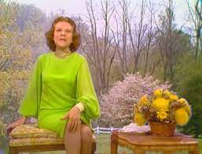
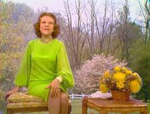

Her Personal Life
Kathryn Johanna Kuhlman was born near Concordia, Missouri, to German-American parents, Joseph Adolph Kuhlman and Emma Walkenhorst. Several years after a spiritual experience at age 14, she began itinerant preaching with her elder sister and brother-in law in Idaho. Later, she was ordained by the Evangelical Church Alliance.
Her Ministry
- Kuhlman traveled extensively around the United States and in many other countries holding "healing crusades" between the 1940s and 1970s.
- She was one of the most well-known healing ministers in the world.
- Kuhlman had a weekly TV program in the 1960s and 1970s called I Believe In Miracles that was aired nationally. She also had a 30-minute nationwide radio ministry of teaching from the Bible and frequently would feature excerpts from her healing services (both music and message).
- She had a foundation which was established in 1954
- By 1970 she moved to Los Angeles, conducting healing services for thousands of people, and was often compared to Aimee Semple MacPherson.
- She became well known for her "gift of healing" despite, as she often noted, having no theological training
The Miracles
An estimated two million people reported they were healed in her meetings over the years. Dr. Richard Owellen, a member of the cancer-research department of the Johns Hopkins Hospital who appeared frequently at Miss Kuhlman's services, testified to various healings that he said he had investigated
.png)
Kathryn Kuhlman's Gallery
 
